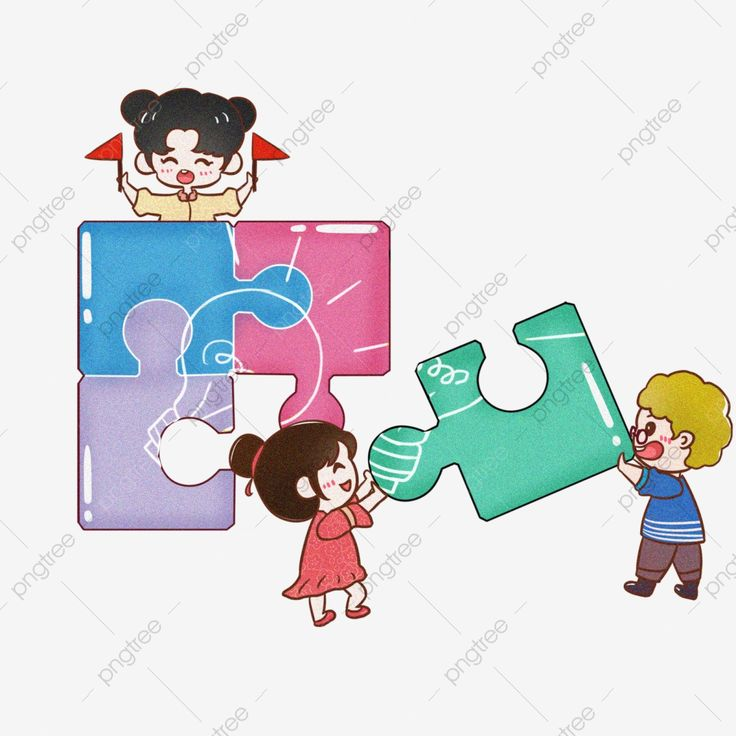

Orientación Educativa

La orientación educativa es un proceso continuo que busca guiar y apoyar a los estudiantes en su formación integral. Tiene como propósito ayudar a los alumnos a conocerse a sí mismos, tomar decisiones informadas y afrontar los desafíos académicos, personales y sociales.
¿Qué es la orientación educativa?
Es una disciplina que forma parte del sistema educativo, enfocada en promover el bienestar y desarrollo de los estudiantes a lo largo de su trayectoria escolar. No se limita a resolver problemas, sino que también fomenta la prevención y el crecimiento personal.
Funciones principales
Las funciones de la orientación educativa incluyen el acompañamiento emocional, el asesoramiento académico, la orientación vocacional y profesional, así como el desarrollo de habilidades sociales.
Acompañamiento emocional
Ayuda a los estudiantes a manejar sus emociones, resolver conflictos y fortalecer su autoestima, lo cual es esencial para un aprendizaje efectivo.
Orientación vocacional
Brinda herramientas y recursos para que los alumnos puedan elegir con mayor claridad su futuro académico o laboral, considerando sus intereses, habilidades y valores.
Colaboración con docentes y familias
La orientación también implica el trabajo conjunto con maestros y padres, para crear un ambiente de apoyo donde el estudiante se sienta escuchado y comprendido.